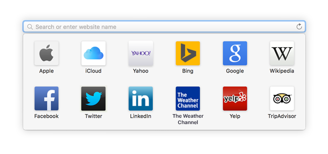
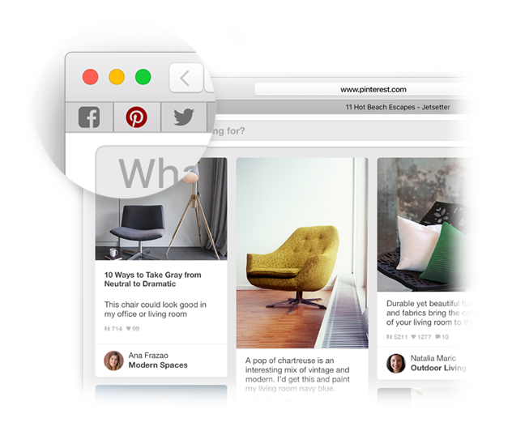
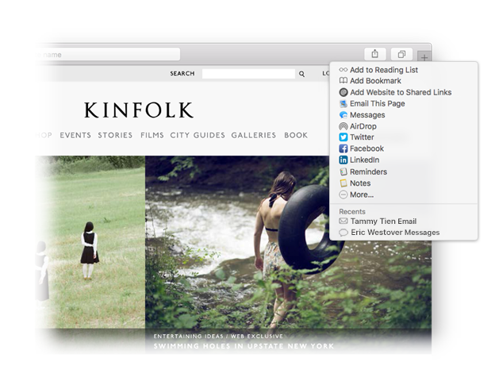

Find a favorite.
Click the Smart Search field to access your favorite websites. Click a site to go there.

Pin a site.
Drag a tab to the left to pin a site, and it stays put in the tab bar.

Share a link.
Click  to send a link in an email or text, share it on Facebook or Twitter, or add it to Notes.
to send a link in an email or text, share it on Facebook or Twitter, or add it to Notes.